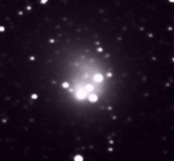
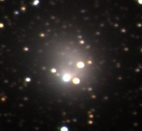

The original caption of the images (on Strieber's site) said:
The marked-up version identifies the object nestled deep in the comet's corona, immediately behind it. The clear version shows the same thing without the digital markings. To all appearances this is a genuine astronomical photograph, and the very close proximity of the object to the comet makes it hard (but not impossible) to claim that the object is a star.
We have identified that image as being a fake based on an image obtained by an astronomer of the Institute for Astronomy, Dr. Dave Tholen. The original image has been posted on our Hale-Bopp page more than one year ago.
Below is a comparison between the central region of the two images. The fraudulent image has been rotated to match the orientation of the original one.
| FRAUD | Original Image |
|  |  |
Images of comet Hale-Bopp showing an allegedly mysterious companion object have appeared on web sites with the URLs http://www.strieber.com/ufonews/bopp5.html and http://www.artbell.com/art/halebopp.html.
These images are fraudulent. The mysterious companion object is not real, having been added to the image most likely using digital image processing techniques. The original image appears at a web site with the URL http://www.ifa.hawaii.edu/images/hale-bopp. I took this image on 1995 September 1 using the University of Hawaii 2.24-m telescope shortly before 6 hours UTC (or about 8 p.m. on August 31 Hawaiian Standard Time).
There is no doubt that THIS 1995 September 1 image was used for the fraudulent images:
- A careful comparison of the central region of the original image shows the comet in the same position with respect to the background stars, which means the real and doctored images must have been taken at essentially the same time. As such, the images could not have been taken from eastern Asia or Australia, where the Sun was still up, nor from western North or South America, where the comet was very low in the sky.
- The images of stars on both show the same amount of sharpness, so an observatory site capable of providing approximately arcsecond seeing must have been involved.
- The faintest stars visible on both images are essentially the same, meaning that the combination of telescope aperture and exposure length must be the same. Given that the stars are not trailed, the exposures must have been short, meaning that a large telescope must have been used.
- The relative brightnesses of the stars shown are also the same, meaning that the same filters must have been used and combined into a single image in the same way.
- Lastly, the pixel size is the same.
All of which indicates that these are in fact the same image. Hawaii is the only place with large telescopes that could have taken the image at the time indicated by the comet's placement among the stars, and with the degree of sharpness provided by the atmosphere above the observatory site. The 2.24-m telescope was the only one on the mountain equipped with a camera that provided the correct pixel size, and the only one that used the particular combination of red, green, and blue filters to produce the original color composite. There is no doubt about the origin of this image.
The myserious companion object does not appear on the original, which means it was added to the copy by some unknown individual in an attempt to deceive the public.
The original images are not secret, as claimed on the first two web sites mentioned above, having been available on the Institute for Astronomy's web site since September of 1995, and it has also appeared on Sky Publishing's web site with permission. The allegedly mysterious astrophysicist who took the image was never at the point of making a public announcement to claim discovery of the object; there is no object for which discovery can be claimed. The identity of the faked image with the one I took was called to my attention only today, and this statement was prepared as a rebuttal.
Dr. David J. Tholen
Institute for Astronomy
University of Hawaii
1997 January 15
Thu Jan 16 18:40:27 1997
{kind=link}